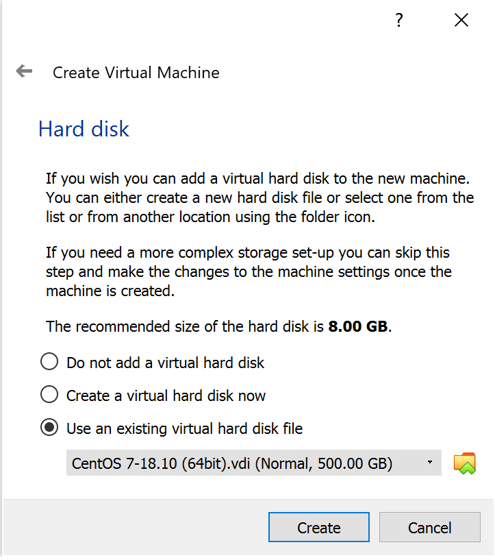
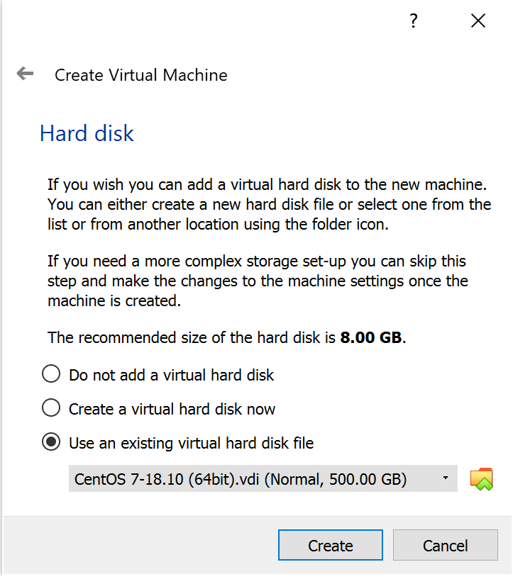
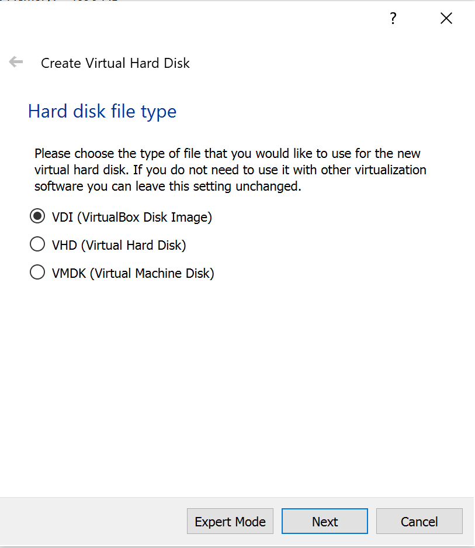
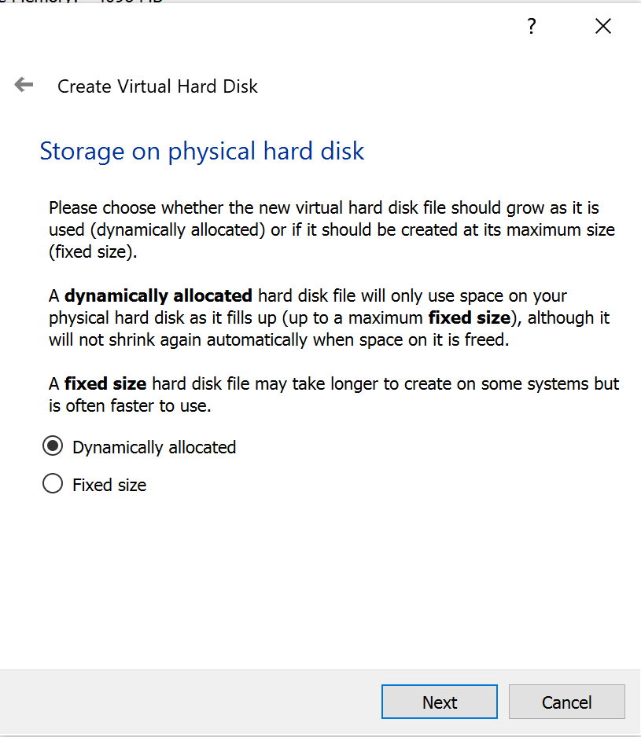
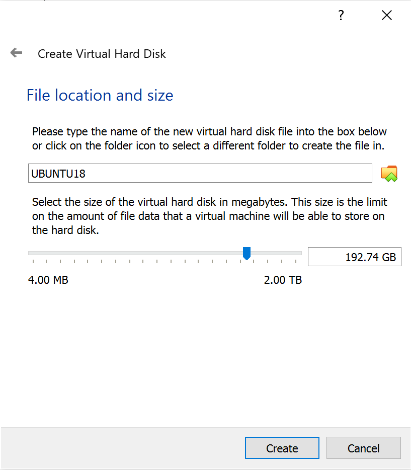
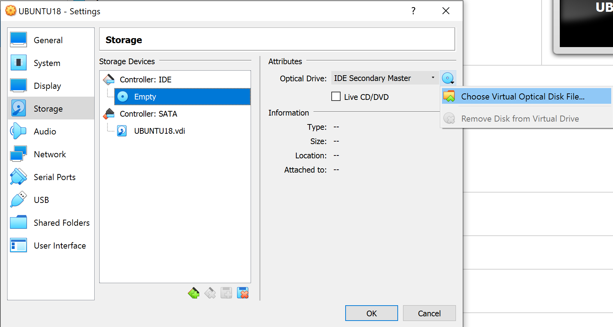
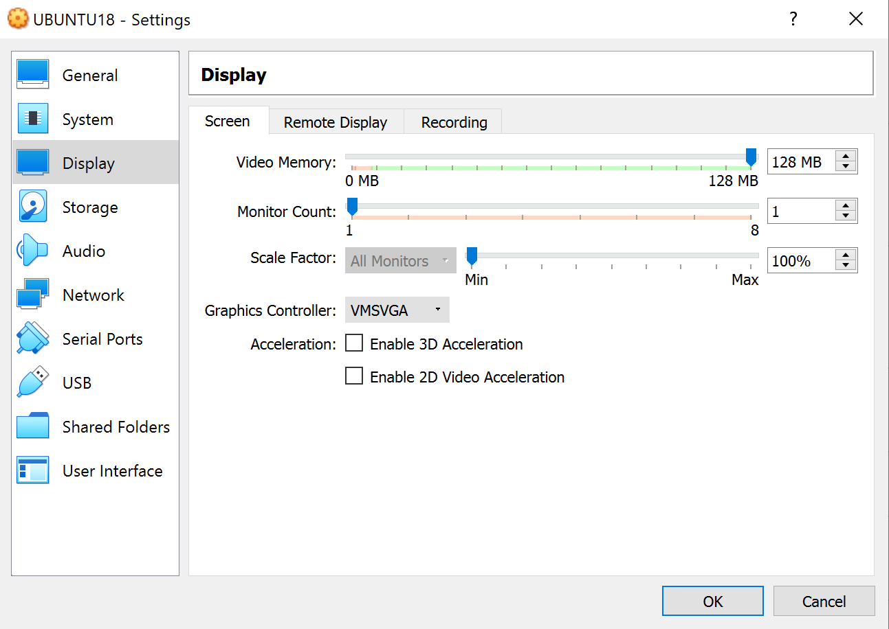
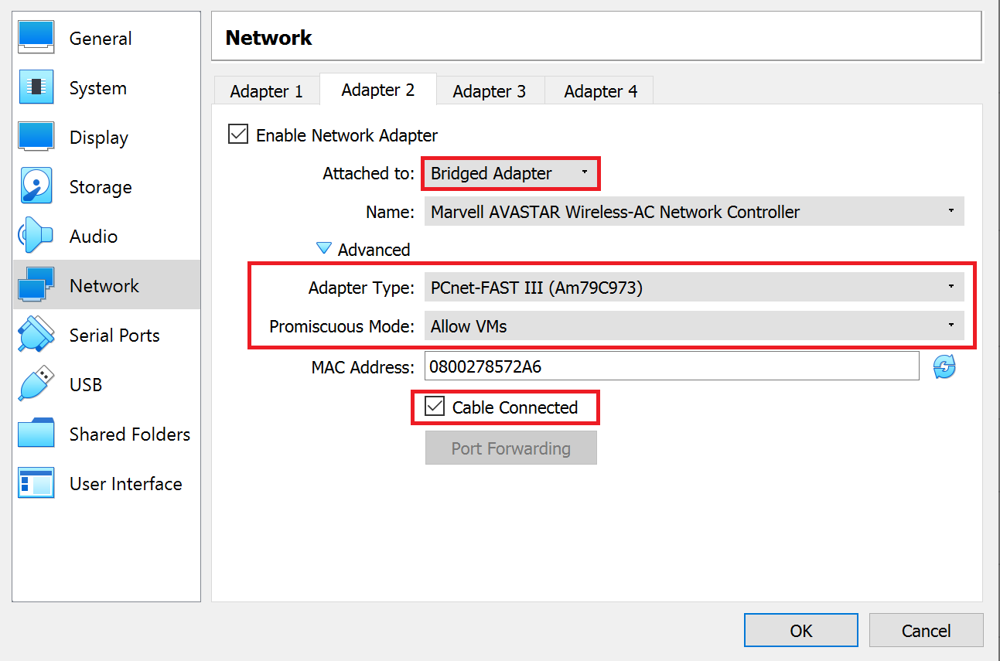

Software Engineering
1. How to load a linux VDI into Virtual Box
- Download the latest VDI (64bit) from https://www.osboxes.org/centos or https://www.osboxes.org/ubuntu
- ISO can be converted to VDI
./C/Program\ Files/Oracle/VirtualBox/VBoxManage.exe convertfromraw <image.iso> <image.vdi> 

Alternatively, an ISO disk can be used.
- Complete the OS setup after starting the machine.






2. SSH setup and port mapping from Virtual machine to local machine
- Start the machine
- Log into the machines using the password "osboxes.org"
- Open the terminal and type "ip addr show" (Note the ip address in red box)
- From Virtual Box, go to File->Preferences->Network. Clicking "Add" Icon will make "NatNetwork" show up
- Click "Edit" Icon. From "Port Forwarding", add Rule as following (Note the IP found from above steps)
- From Machine Settings->Network, choose the name "NatNetwork"
- SSH into your vm by ssh -p 2222 root@127.0.0.1. Password should be "osboxes.org"
- Turn off your machine
- Try starting VM headless /C/Program\ Files/Oracle/VirtualBox/VBoxManage startvm RHEL7 --type headless
- To turn off VM headless /C/Program\ Files/Oracle/VirtualBox/VBoxManage controlvm RHEL7 poweroff --type headless
- From Port Forwarding screen, add Rule 2. Use similar approach for other ports


3. Enabling copy and paste between local machine and VM
- From Machine Settings->General, Select "Bidirectional"
- If not working after applying above step, Find Devices from the menu bar, then click Insert Guest Addition CD Image

# Need to install these first.
sudo apt install gcc make perl# Then from the terminal.
sudo reboot4. Maximize the video memory
-

5. Install dependencies (Ubuntu)
# Enabling ssh from local machine to virtual machine.
sudo apt update -y
sudo apt upgrade -y
sudo apt install openssh-server -y
sudo systemctl status ssh# Install docker.
# Create a file at /etc/apt/sources.list.d/docker.list
# And add this line: deb [arch=amd64] https://download.docker.com/linux/ubuntu bionic stable
sudo apt-get install apt-transport-https ca-certificates curl gnupg-agent software-properties-common -y
curl -fsSL https://download.docker.com/linux/ubuntu/gpg | sudo apt-key add -
sudo apt update -y
sudo apt-get install docker-ce docker-ce-cli containerd.io -y# Install terminator.
sudo apt install terminator6. Fixing internet problem inside VirtualBox
- From Settings->Network, add additional "Bridged Adapter". Enter the information inside the red box. (If you use any other network/adapter, keep the same Advanced settings) 
7. Adjust display
- Settings -> Display
- Pick a resolution
- Click Apply and keep configuration